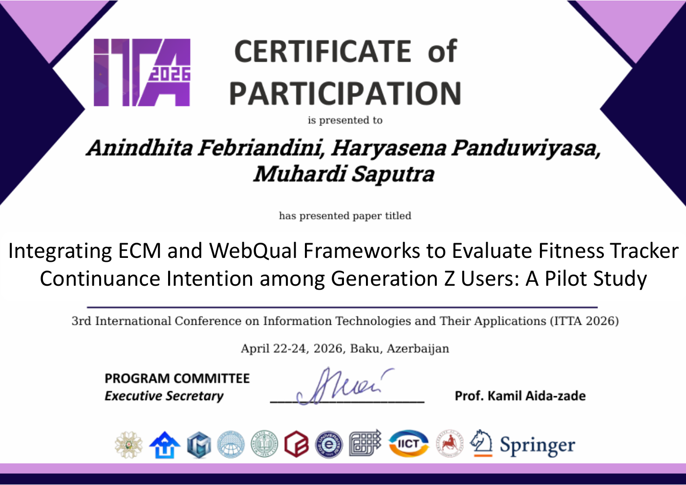

01 / RESEARCH OVERVIEW
Understanding continued use of fitness tracker apps
This undergraduate thesis examines factors associated with Generation Z users' intention to continue using fitness tracker applications in Greater Bandung. The final model extends the Expectation-Confirmation Model (ECM) with Information Quality and Self-Quantification.
Official thesis title: Pemodelan Continuance Intention Penggunaan Aplikasi Fitness Tracker Menggunakan Extended ECM: Studi Kasus Generasi Z di Bandung Raya.
02 / RESEARCH BACKGROUND & OBJECTIVES
Focus on the post-adoption stage
Adopting an app does not guarantee that people will keep using it. The study examines how users' confirmation, perceived usefulness, satisfaction, information quality, and self-quantification relate to continuance intention after they have gained real experience with a fitness tracker app.
03 / METHODOLOGY
Survey research with 424 active users
The study used an online Google Forms questionnaire and non-probability purposive sampling. The 424 valid respondents were Generation Z users (born 1997-2012), lived in Greater Bandung, actively used a fitness tracker app, and had used it for at least one month. Responses were analyzed with PLS-SEM in RStudio using the SEMinR package.
04 / KEY FINDINGS
Key relationships in the final model
Satisfaction and continued use
Satisfaction was the strongest and only significant direct predictor of continuance intention in the final model.
Usefulness works through satisfaction
Perceived usefulness did not have a significant direct relationship with continuance intention (beta = -0.034, p = 0.452). The thesis reports a full mediation effect through satisfaction.
Information quality
Information Quality had a positive, significant relationship with satisfaction (beta = 0.327, p < 0.001).
Self-tracking and confirmation
Self-Quantification related positively to perceived usefulness (beta = 0.249) and confirmation (beta = 0.359). Confirmation related positively to perceived usefulness (beta = 0.393) and satisfaction (beta = 0.276); perceived usefulness also related positively to satisfaction (beta = 0.285). Each reported path was significant (p < 0.001).
05 / CONCLUSION & IMPLICATIONS
Turn useful information into a satisfying experience
For the respondents and model studied, accurate information and self-tracking behavior were associated with factors that build satisfaction. Satisfaction, in turn, was the only significant direct predictor of continued use. The findings describe relationships in this survey model and should not be read as proof of causation or as results for every fitness tracker user.
06 / CONFERENCE PRESENTATION
Presented at ITTA 2026
The participation certificate records a co-authored paper presentation at the 3rd International Conference on Information Technologies and Their Applications (ITTA 2026), held April 22-24, 2026, in Baku, Azerbaijan.
Integrating ECM and WebQual Frameworks to Evaluate Fitness Tracker Continuance Intention among Generation Z Users: A Pilot Study
The certificate-listed conference paper title uses ECM and WebQual. The final undergraduate thesis above has a different title and uses an extended ECM model with Information Quality and Self-Quantification. They are presented separately here because the conference paper has not yet been published.
Publication status: Presented at ITTA 2026; not yet published.
07 / DOCUMENTATION
Conference participation certificate
The certificate records the paper presentation at ITTA 2026. It is shown here as participation evidence; it does not indicate that the paper has been published.
